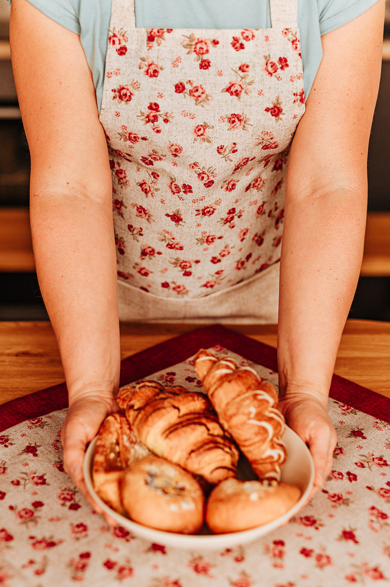
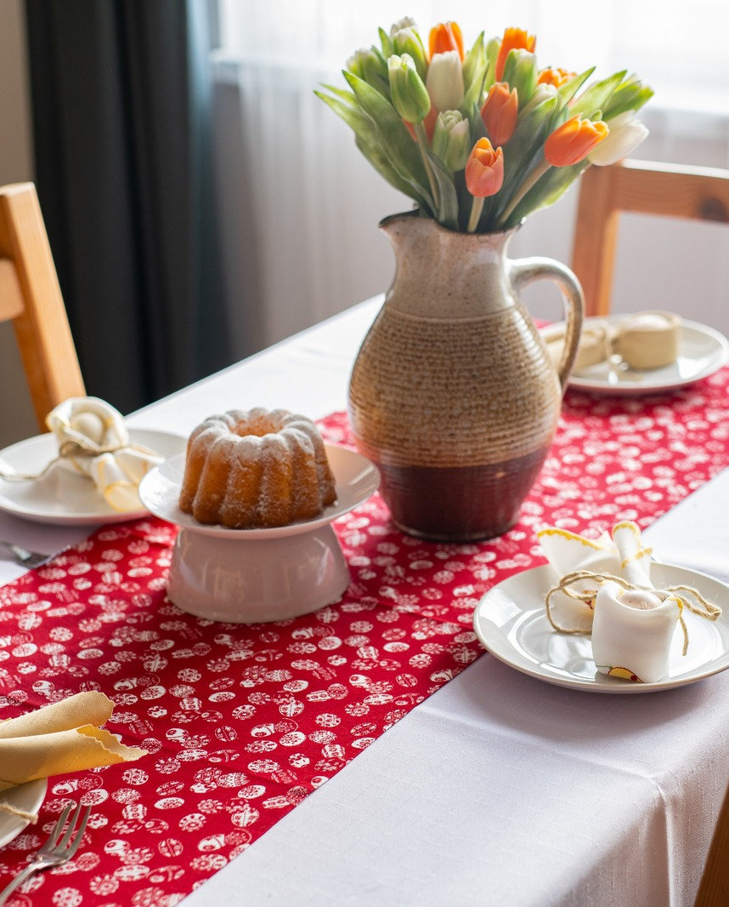
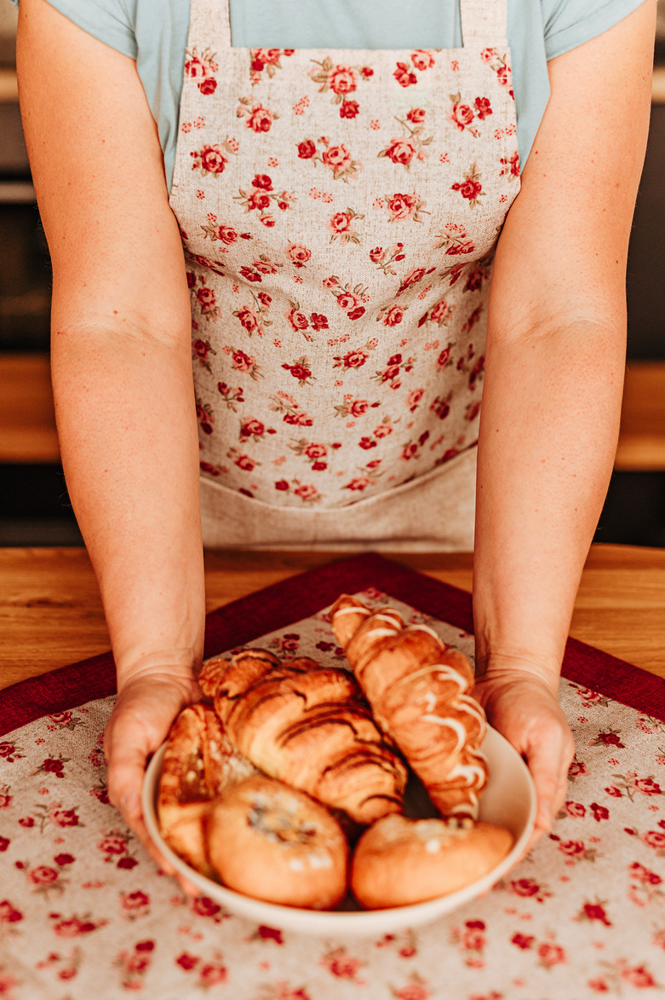
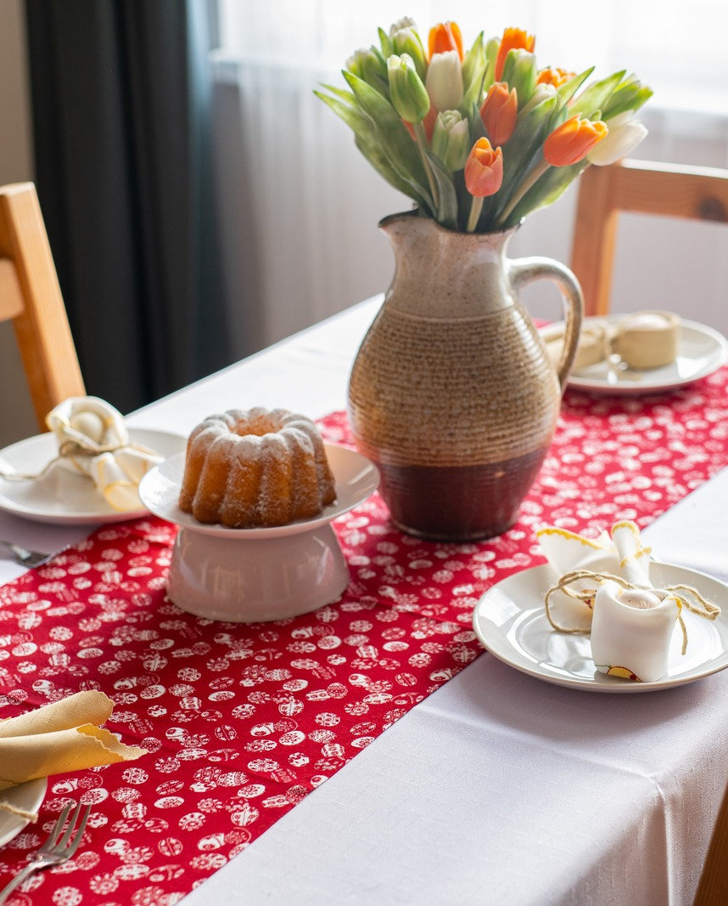
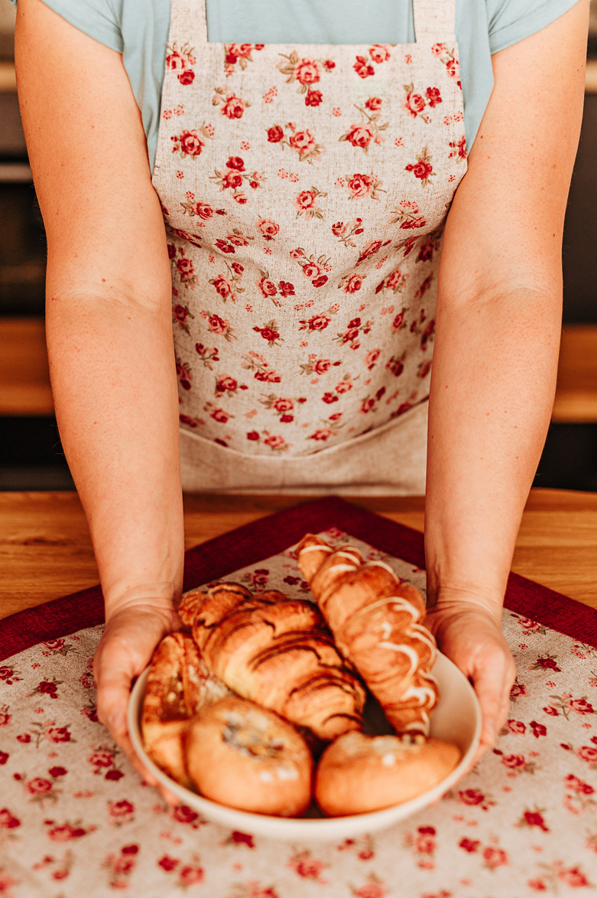
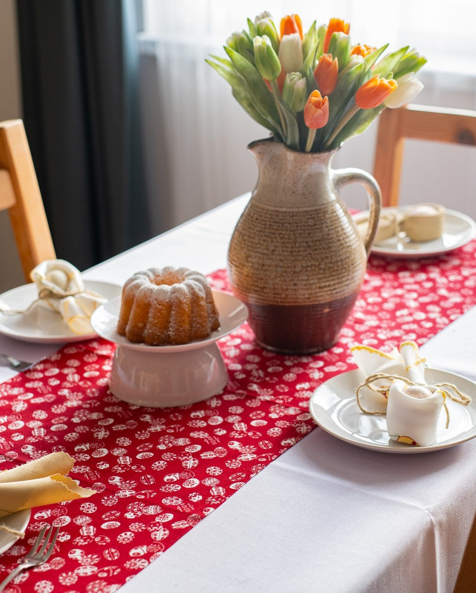

Bytový textil a metráž
Každá místnost v domě potřebuje ty správné doplňky a vybavení, aby se z ní stal váš domov. Vybíráme takové materiály a značky, které vám budou dělat radost dlouho.
 



Každá místnost v domě potřebuje ty správné doplňky a vybavení, aby se z ní stal váš domov. Vybíráme takové materiály a značky, které vám budou dělat radost dlouho.


Ti, kteří si rádi šijí vlastní modely pro sebe či pro děti anebo si chtějí bytové doplňky vyrobit sami, si mohou vybrat látky v metráži. Koupíte zde řadu dětských designů, oblíbené úplety, teplákoviny i softshell. Určitě ale nabídneme i látky na slavnostní šaty a další příležitosti. Přijďte a střihneme to spolu vašemu domovu na míru!


Doplňky do kuchyní a obývacích pokojů vybízejí k hravosti. Ať už zařizujete nové bydlení anebo po letech chcete obměnu záclon, závěsů a dalších dekorativních textilií, vyberete si podle svého vkusu. Vzory záclon pro vás vybíráme podle různého stylu interiéru – od minimalistických čirých voálů přes geometrické a květinové vzory až po rustikální vyšívané záclony. Samozřejmě, že máme také ubrusy a prostírání včetně svátečních. Prodáváme také polštáře, deky anebo třeba zástěry a utěrky. U všeho zboží myslíme na kvalitu a trvanlivost. Některé doplňky šijeme a vymýšlíme sami a rádi je přizpůsobíme i vašemu přání.
Ručníky a osušky vybíráme s vyšší gramáží bavlny. Dodává nám je například česká firma Veba. Vyberete si ze spousty odstínů i designů – společné mají vždycky to, že dobře sají a svou měkkost i barvu si uchovávají dlouho.
Ložní povlečení nabízíme ve vysoké kvalitě a gramáži – na prostěradlech i povlečení to poznáte už po několika praních. Spolupracujeme především s firmou Dadka a najdete u nás spoustu barev i materiálů, jako je flanel, krep, bavlna i damašek. Máme také atypické rozměry ložního povlečení a zařídíme případné ušití atypického rozměru na zakázku. Pro příznivce originálních designů nabízíme povlečení značky Matějovský.